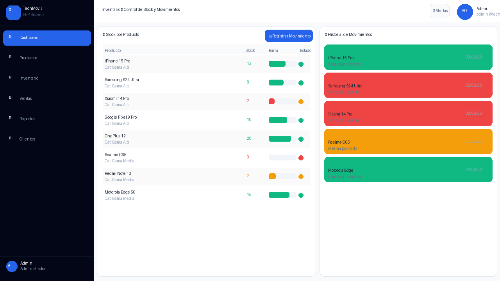

Manual de Usuario¶
Manual de Usuario — Sistema FinTechmovil ERP. Gestión de Inventario, Almacén y Ventas de Celulares. Universidad Peruana Unión, Sede Juliaca, Facultad de Ingeniería y Arquitectura, Escuela Profesional de Ingeniería de Sistemas. Asignatura: Pruebas y Despliegue del Software. Docente: Ing. David Mamani Pari. Semestre X — Grupo FinTechmovil. Juliaca – Puno – Perú, 2026.
Información del sistema¶
| Campo | Valor |
|---|---|
| Sistema | FinTechmovil ERP v1.0.0 |
| URL de Acceso | http://localhost:5173 | https://fintechmovil.vercel.app |
| Usuario | admin |
| Contraseña | 1234 |
| Módulos | Dashboard · Productos · Inventario · Ventas POS · Reportes · Clientes |
1. Acceso al sistema — login¶
Para ingresar al sistema FinTechmovil ERP:
- Abrir Chrome en
http://localhost:5173. - Campo ① Usuario: escribir
admin. - Campo ② Contraseña: escribir
1234. - Click en ③ "Ingresar al Sistema →".
 Figura 1: Pantalla Login FinTechmovil — ① Usuario ② Contraseña ③ Botón Ingresar.
Figura 1: Pantalla Login FinTechmovil — ① Usuario ② Contraseña ③ Botón Ingresar.

Figura 2: Login fallido — aparece mensaje de error en rojo "Credenciales incorrectas".2. Dashboard — panel principal¶
El Dashboard se carga automáticamente al iniciar sesión. Muestra el resumen del negocio.
 Figura 3: Dashboard Principal — ① KPIs ② Gráfico ventas ③ Top productos ④ Alertas stock bajo.
Figura 3: Dashboard Principal — ① KPIs ② Gráfico ventas ③ Top productos ④ Alertas stock bajo.
| Indicador | KPI | Descripción |
|---|---|---|
| ① Azul | Ventas Hoy | Total de ventas del día actual |
| ② Verde | Ingresos Mes | Suma total de ingresos del mes en Soles (con IGV) |
| ③ Amarillo | Stock Total | Total de unidades en el almacén |
| ④ Rojo | Alertas Stock | Productos con stock igual o menor al mínimo |
3. Módulo Productos¶
 Figura 4: Catálogo de Productos — ① Buscador en tiempo real ② Botón Nuevo Producto ③ Indicadores stock.
Figura 4: Catálogo de Productos — ① Buscador en tiempo real ② Botón Nuevo Producto ③ Indicadores stock.
3.1 Registrar nuevo producto¶
- Click en "➕ Nuevo Producto" (botón azul arriba derecha).
- Completar: Nombre (), Marca (), Precio (), Stock ().
- Click en "✅ Registrar Producto".
 Figura 5: Formulario de registro — números indican el orden de llenado de campos obligatorios.
Figura 5: Formulario de registro — números indican el orden de llenado de campos obligatorios.
4. Módulo Inventario¶
 Figura 6: Inventario — Panel izquierdo: stock con barras. Panel derecho: historial movimientos.
Figura 6: Inventario — Panel izquierdo: stock con barras. Panel derecho: historial movimientos.
4.1 Registrar movimiento¶
- Click en "📦 Registrar Movimiento".
- Seleccionar producto, tipo (📥 Entrada / 📤 Salida / 🔧 Ajuste) y cantidad.
- Escribir el motivo → Click en "✅ Registrar".
5. Módulo Ventas — POS¶
 Figura 7: Sistema POS — ① Catálogo (click para agregar) ② Carrito ③ Botón Completar Venta.
Figura 7: Sistema POS — ① Catálogo (click para agregar) ② Carrito ③ Botón Completar Venta.
5.1 Proceso de venta¶
- Click en el producto → se agrega al carrito.
- Ingresar nombre del cliente (obligatorio).
- Seleccionar método de pago (Efectivo, Yape, Tarjeta, etc.).
- Verificar: Subtotal + IGV 18% = TOTAL.
- Click en "💳 Completar Venta".
 Figura 8: Confirmación de venta — ID VTA-XXXX, cliente, productos, IGV y total calculado.
Figura 8: Confirmación de venta — ID VTA-XXXX, cliente, productos, IGV y total calculado.
6. Módulo Reportes¶
 Figura 9: Reportes — KPIs de ingresos, gráfico mensual, gráfico de barras y tabla de rentabilidad.
Figura 9: Reportes — KPIs de ingresos, gráfico mensual, gráfico de barras y tabla de rentabilidad.
7. Módulo Clientes¶
 Figura 10: Clientes — Tabla con historial de compras, buscador y gestión completa.
Figura 10: Clientes — Tabla con historial de compras, buscador y gestión completa.
8. Solución de problemas¶
| Problema | Causa | Solución |
|---|---|---|
| Página en blanco | Frontend no iniciado | npm run dev en frontend/ |
| Credenciales incorrectas | Usuario o contraseña mal escritos | Usar exactamente admin / 1234 |
| Productos no cargan | Backend no está corriendo | ./mvnw spring-boot:run en backend/ |
| Botón Venta deshabilitado | Carrito vacío o sin cliente | Agregar producto + nombre cliente |